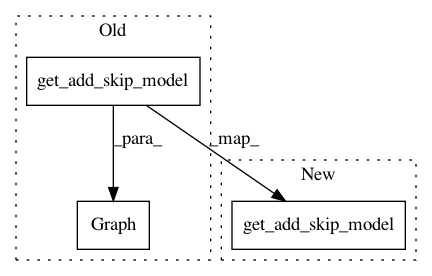

f4503bb3a3be014b452f54d8e2d187bb6419f627,tests/test_bayesian.py,,test_gpr,#,12
Before Change
def test_gpr():
gpr = IncrementalGaussianProcess(1.0)
gpr.first_fit([Graph(get_add_skip_model()).extract_descriptor()], [0.5])
assert gpr.first_fitted
gpr.incremental_fit([Graph(get_concat_skip_model()).extract_descriptor()], [0.6])
After Change
def test_gpr():
gpr = IncrementalGaussianProcess(1.0)
gpr.first_fit([get_add_skip_model().extract_descriptor()], [0.5])
assert gpr.first_fitted
gpr.incremental_fit([get_concat_skip_model().extract_descriptor()], [0.6])
In pattern: SUPERPATTERN
Frequency: 6
Non-data size: 3
Instances
Project Name: keras-team/autokeras
Commit Name: f4503bb3a3be014b452f54d8e2d187bb6419f627
Time: 2018-08-01
Author: jhfjhfj1@gmail.com
File Name: tests/test_bayesian.py
Class Name:
Method Name: test_gpr
Project Name: jhfjhfj1/autokeras
Commit Name: f4503bb3a3be014b452f54d8e2d187bb6419f627
Time: 2018-08-01
Author: jhfjhfj1@gmail.com
File Name: tests/test_graph.py
Class Name:
Method Name: test_extract_descriptor_add
Project Name: jhfjhfj1/autokeras
Commit Name: f4503bb3a3be014b452f54d8e2d187bb6419f627
Time: 2018-08-01
Author: jhfjhfj1@gmail.com
File Name: tests/test_bayesian.py
Class Name:
Method Name: test_edit_distance